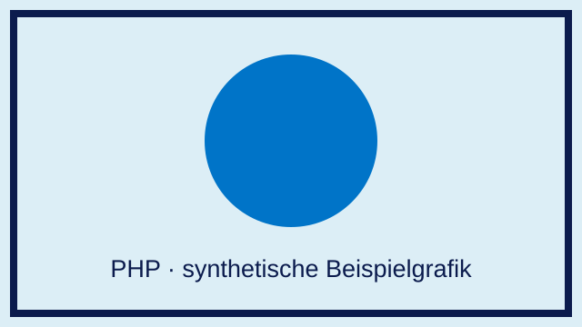

PHP · Didaktisches Beispiel mit fiktiven Daten. Formularvorschauen bleiben lokal; keine Buchung.
Diese Angaben sind fiktiv.

Eine synthetische Unterrichtsgrafik – kein Reisefoto.
Das kurze Video zeigt nur eine farbige Demonstrationsfläche. Es enthält keine Tonspur.